Louis Vuitton
commonly known as Louis Vuitton (/luˈiː vɪˈtɒn/ ⓘ, French: [lwi vɥitɔ̃] ⓘ), is a French luxury fashion house and company founded in 1854 by Louis Vuitton.[1] The label's LV monogram appears on most of its products, ranging from luxury bags and leather goods to ready-to-wear, shoes,[4] perfumes, watches, jewellery, accessories, sunglasses and books. Louis Vuitton is one of the world's leading international fashion houses. It sells its products through standalone boutiques, lease departments in high-end departmental stores, and through the e-commerce section of its website.[5][6] Louis Vuitton merged with Moët Hennessy in 1987 to create LVMH, of which it is a subsidiary.1945 through 2000
During this period, Louis Vuitton began to incorporate leather into most of its products, which ranged from small purses and wallets to larger pieces of luggage. In order to broaden its line, the company revamped its signature Monogram canvas in 1959[21] to make it more supple, allowing it to be used for purses, bags, and wallets. It is believed that in the 1920s, counterfeiting returned as a greater issue to continue on into the 21st century.[6] In 1966, the Papillon was launched (a cylindrical bag that is still popular today). By 1977 with annual revenue up to 70 million Francs (US$14.27 million).[28] A year later, the label opened its first stores in Japan: in Tokyo and Osaka. In 1983, the company joined with America's Cup to form the Louis Vuitton Cup, a preliminary competition (known as an eliminatory regatta) for the yacht race. Louis Vuitton later expanded its presence in Asia with the opening of a store in Taipei, Taiwan in 1983 and Seoul, South Korea in 1984. In the following year, 1985, the Epi leather line was introduced.[21] 1987 saw the creation of LVMH.[21] Moët et Chandon and Hennessy, leading manufacturers of champagne and cognac, merged respectively with Louis Vuitton to form the luxury goods conglomerate. Profits for 1988 were reported to have been up by 49% more than in 1987. By 1989, Louis Vuitton came to operate 130 stores worldwide.[21] Entering the 1990s, Yves Carcelle was named president of LV, and in 1992, Louis Vuitton entered mainland China by opening its first store in Beijing at the Palace Hotel. Further products became introduced such as the Taiga leather line in 1993, and the literature collection of Voyager Avec... in 1994. In 1996, the celebration of the Centennial of the Monogram canvas was held in seven cities worldwide.[21] In 1997, Louis Vuitton made Marc Jacobs its Artistic Director.[29] In March of the following year, he designed and introduced the company's first "prêt-à-porter" line of clothing for men and women. Also in this year products introduced included the Monogram Vernis line, the LV scrapbooks, and the Louis Vuitton City Guide.[21] The last events in the 20th century were the release of the mini monogram line in 1999. The opening of the first store in Africa in Marrakech, Morocco, in 2000. Finally, the auction at the International Film Festival in Venice, Italy, where the vanity case "amfAR" designed by Sharon Stone was sold, with the proceeds going to the Foundation for AIDS Research (also in 2000).[21]2001 to 2011
By 2001, Stephen Sprouse, in collaboration with Marc Jacobs, designed a limited-edition line of Vuitton bags[21] that featured graffiti written over the monogram pattern. The graffiti read Louis Vuitton and, on certain bags, the name of the bag (such as Keepall and Speedy). Certain pieces, which featured the graffiti without the Monogram canvas background, were only available on Louis Vuitton's V.I.P. customer list. Jacobs also created the charm bracelet, the first-ever piece of jewellery from LV, within the same year.[21] In 2002, the Tambour watch collection was introduced.[21] During this year, the LV building in Tokyo's Ginza district was opened, and the brand collaborated with Bob Wilson for its Christmas windows scenography. In 2003, Takashi Murakami,[21] in collaboration with Marc Jacobs, masterminded the new Monogram Multicolore canvas range of handbags and accessories. This range included the monograms of the standard Monogram canvas but in 33 different colours on either a white or black background. (The classic canvas features gold monograms on a brown background.) Murakami also created the Cherry Blossom pattern, in which smiling cartoon faces in the middle of pink and yellow flowers were sporadically placed atop the Monogram canvas. This pattern appeared on a limited number of pieces. The production of this limited-edition run was discontinued in June 2003. Within 2003, the stores in Moscow, Russia, and in New Delhi, India were opened, the Utah and Suhali leather lines were released, and the 20th anniversary of the LV Cup was held.[21] In 2004, Louis Vuitton celebrated its 150th anniversary. The brand also inaugurated stores in New York City (on Fifth Avenue), São Paulo, Mexico City, Cancun and Johannesburg. It also opened its first global store in Shanghai. By 2005, Louis Vuitton reopened its Champs-Élysées store in Paris designed by the American Architect Eric Carlson and released the Speedy watch collection. In 2006, LV held the inauguration of the Espace Louis Vuitton on its 7th floor.[21] In 2008, Louis Vuitton released the Damier Graphite canvas. The canvas features the classic Damier pattern but in black and grey, giving it a masculine look and urban feel. Also in 2008, Pharrell Williams co-designed a series of jewellery ("Blason") and glasses for Louis Vuitton.[30] In 2010, Louis Vuitton opened what is described as their most luxurious store in London.[31] In early 2011, Louis Vuitton hired Kim Jones as its "Men Ready-to-Wear Studio and Style Director". He became the lead designer of menswear while working under the company-wide artistic directorship of Marc Jacobs.[32] On 17 September 2011, the company opened its Louis Vuitton Island Maison at Marina Bay Sands
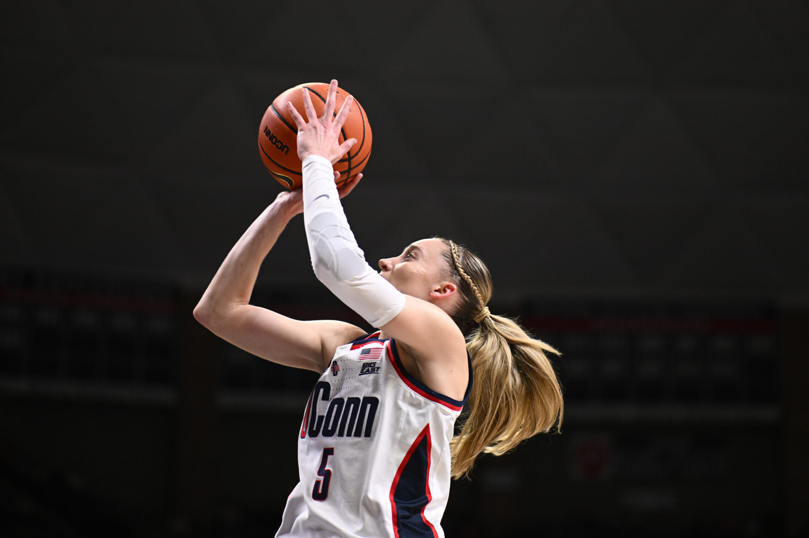
 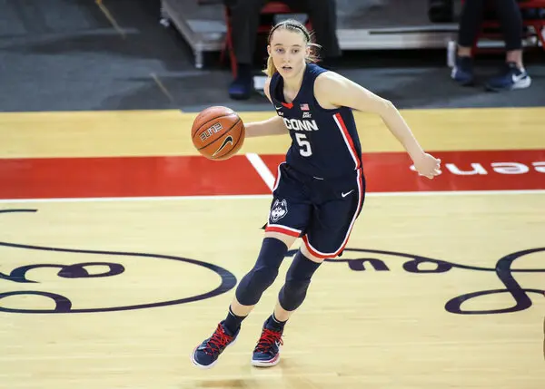
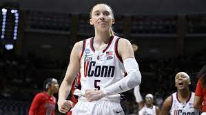
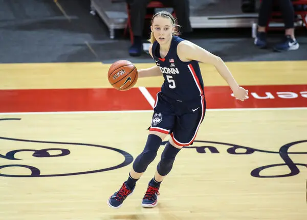
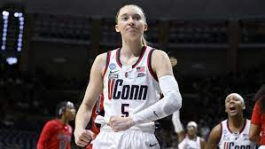
 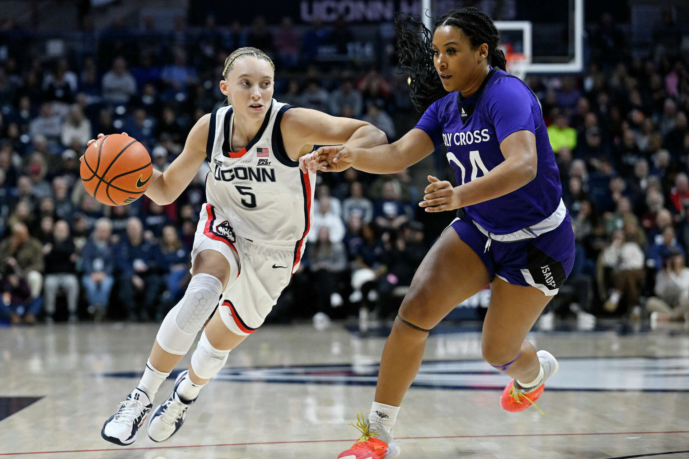
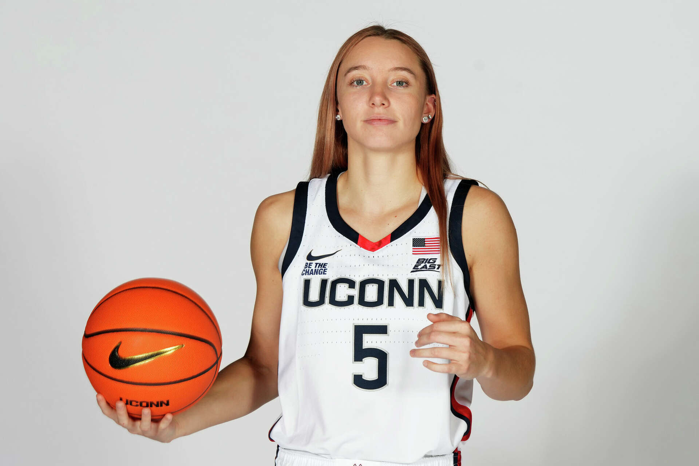
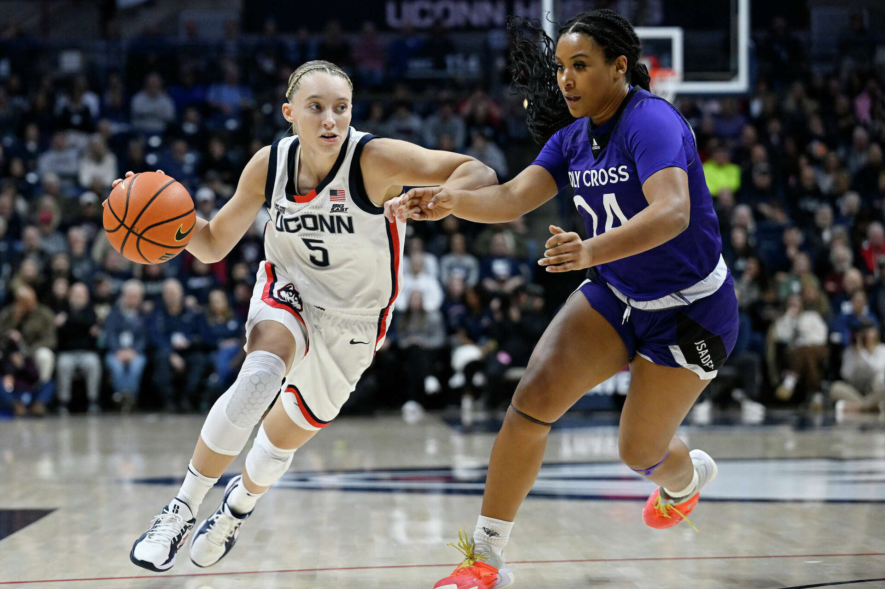
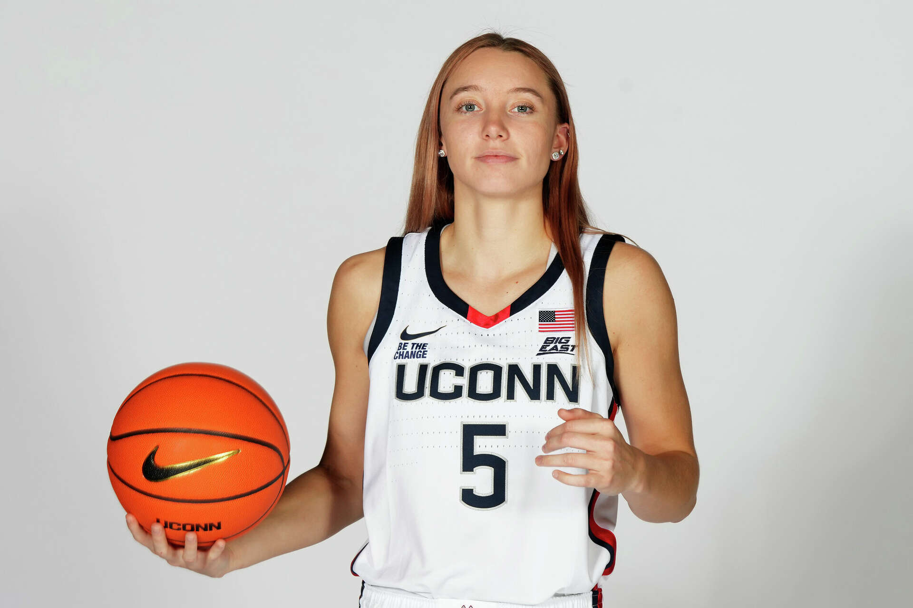
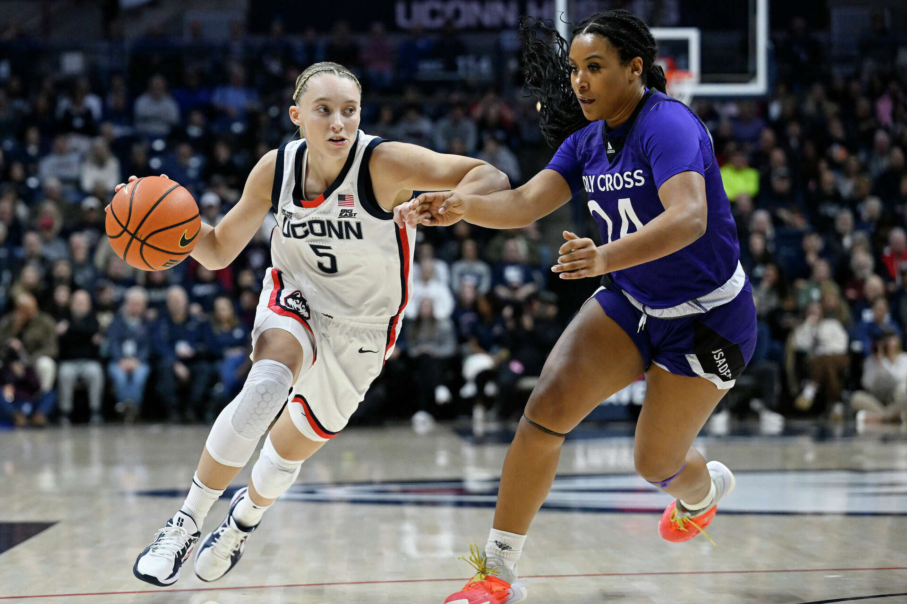
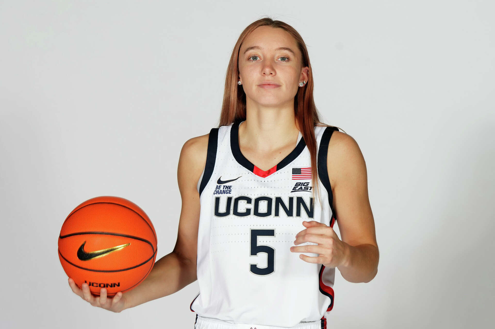